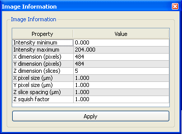

Manual
Table of Contents
- Introduction
- Installation
- Program Window
- Menu Bar
- Visualization Panel
- Image Analysis Window
- Display Window
- Tasks Window
- Image Information Window
- Version History
Introduction
Fibrin Analysis is a program developed to analyze images of fibrous objects, specifically targeting confocal microscopy images of fibrin networks. The program has filters for segmenting fibrous objects and computing their approximate centerlines. In addition, the orientation of fibers running through centerline voxels can be estimated and exported to a spreadsheet file for further analysis.
Installation
The Fibrin Analysis is currently available for Mac OS X and Microsoft Windows XP.
Installation instructions for Mac OS X
- Download and save the Mac OS X installer here.
- Double click the file Fibrin-Analysis-1.1.0-Darwin.dmg. This will mount and open a disk image entitled Fibrin-Analysis-1.1.0-Darwin.
- Drag the FibrinAnalysis 1.1.0 program to the Applications alias in the window that was opened.
- Unmount the Fibrin-Analysis-1.1.0-Darwin disk image by dragging the mounted volume to the trash.
- The program will now be in the Applications folder.
- You can optionally copy this documentation to your computer by dragging the User Manual folder somewhere on your system.
Installation instructions for Windows XP
- Download the Windows XP installer here.
- Either run the installer from your web browser or save the installer file and double-click it.
- Run the installer.
- Once installed, the program, documentation, and installer will be available under the Start Menu in All Programs -> Fibrin Analysis 1.1.0.
Program Window

The program window after startup.
The program window is shown on the right. At
the top of the window is a standard menu bar. Below the menu
bar is the Visualization panel for viewing image data
and segmentation results. Rotating, translating, and scaling the
visualization interactively is done by clicking and dragging the mouse
within this panel. Four docked windows on the left-hand
side of the window contain control panels for interacting with the
program. The Image Analysis window contains a control panel
for changing settings for the image analysis algorithms. The Display
window contains controls for changing the visualization of the image data.
The Tasks window contains buttons for performing various
analysis tasks. Finally, the Image Information window
displays information about the image and enables changing of certain settings
such as image pixel size. These windows can be undocked from the main
program window by clicking and dragging in the window's title bar.
Menu Bar
The menu bar in Fibrin Analysis contains three menus that provide commands useful to creating loading data, saving results, modifying the viewpoint of the visualization, and controlling visibility of the control panel windows. Each menu is described in more detail below.
File Menu
The File Menu features typical options for creating and saving simulations:
- Open Image...
- Opens an image file. Supported file formats are: multi-layer TIF, VTK, and LSM. The LOCI Bio-Formats plug-in for ImageJ can be used to convert many microscopy file formats into TIF files. Series of TIF images defining a 3D image cannot currently be opened.
- Save Filtered Image...
- Saves the result of the currently selected image filter in the Filter Settings control panel in the Image Analysis window as a 16-bit TIF file. Use the Filtered image intensity scale setting in the Image Analysis window to adjust the filtered image intensities to the range [0,65535], the valid range for 16-bit TIF images.
- Save Fiber Orientation Data...
- Saves a vector image containing the estimated fiber orientation at each pixel in the image. The number of slices (z-dimension of the image) may be larger than the input image if the Z slice spacing is different from the X dimension (pixels) or Y dimension (pixels). In that case, the image will be resampled to produce isotropic voxels. This reduces directional bias in fiber orientation statistics.
- Open Session...
- Opens a session file that contains control panel settings. If an image was open when the session file was saved, then this menu item will open that same image.
- Save Session...
- Saves a session file that contains control panel settings.
- Save Picture...
- Saves a screen shot of the visualization panel.
- Save Rotation Animation...
- Saves a series of PNG files that constitutes a rotating animation of the items in the visualization panel.
- Save Geometry...
- Saves a VTK file that contains the geometry of an isosurface from a filtered version of the loaded image. The filter is the one selected in the Filter Settings control panel in the Image Analysis window. The isovalue is the one in the Display Settings control panel in the Display window.
- Exit
- Exit the program.
View Menu
The model menu has options for adding and removing geometric models to the simulation.
- Open View...
- Opens a file specifying camera settings for the visualization panel.
- Save View...
- Saves a file with the current settings of the camera in the visualization panel.
- Reset View
- Resets the camera so that the image is centered and scaled to fit in the panel and looking down the negative z-axis.
Window Menu
The Window menu primarily controls visibility of windows in the program:
- About Fibrin Analysis
- Shows a window containing information about the program.
- Image Analysis Window
- Toggle the visibility of the Image Analysis window.
- Display Window
- Toggle the visibility of the Display window.
- Tasks Window
- Toggle the visibility of the Tasks window.
- Image Information Window
- Toggle the visibility of the Image Information window.
Visualization Panel
Clicking and dragging within the Visualization Panel causes manipulation of the camera. You can change the view of the specimen models by rotating, translating, and zooming in on the scene. Clicking and dragging while holding various mouse buttons enacts these camera transformations:
- Left mouse button - Causes rotation of the scene
- Middle mouse button - Causes translation of the scene
- Right mouse button - Causes zooming in on the scene
Image Analysis Window
The Image Analysis Window.
The Image Analysis Window controls which filter is applied to the image. The available filters,
explained below, are connected in a pipeline. That is, the result of a filter in the list is
fed into the subsequent filter. You can switch between filters to examine results at intermediate
steps of the full image analysis pipeline in the visualization panel. The filter results are
displayed only as an isosurface; the raw image data is displayed in the image plane. For example, switching to the
Multiscale Fiberness filter will display the filter results via the isosurface in the
display window. You can then adjust filter parameters based on how well the isosurface
appears to account for fibrous objects in the image.
In addition to determining what the isosurface shows, the selected filter also specifies which data is saved
when the Save Filtered Image... menu item is chosen in the File menu.
Each filter in the Image Filter list depends on all of the filters above it. To minimize clutter in the interface, only the settings for the selected filter and those that it depends on are displayed. Each filter and its settings are explained below.
- No filter
No filter is applied to the image. The raw image data is displayed in the visualization panel.
- Filtered image intensity scale - This value is a scale factor applied to the output of the selected filter -- not just the raw image data --. It is typically used to scale the range of the image data to the range [0, 65535], the range of values representable by 16-bit TIF files.
- Multiscale Fiberness
- Multiscale Fiberness Threshold
This filter creates a binary image (one whose voxel values are restricted to 0 and 1) from the result of the multiscale fiberness filter. All voxels with values above the threshold are set to 1 and all the others are set to 0.
- Fiberness threshold - The threshold value. One stategy to determine this value is to adjust the isovalue in the Display Window so that the isosurface overlaps fibrous objects in the image adequately. Setting the threshold value to this isovalue will ensure that the statistics are taken on all fibrous objects in the image.
- Skeletonization
Roughly speaking, skeletonization is a process of repeatedly removing voxels from a set of connected voxels until a thin "curve" one voxel wide is left. For a fibrous object, the resulting set of voxels, called the topological skeleton, approximates the medial axis of the object. A medial axis is also sometimes called a centerline. There are no settings for this filter.
The algorithm used by this filter is from T.C. Lee, R.L. Kashyap, and C.N. Chu. Building skeleton models via 3-D medial surface/axis thinning algorithms. Computer Vision, Graphics, and Image Processing, 56(6):462--478, 1994. The ITK filter implementation was written by Hanno Homann, Oxford University, Wolfson Medical Vision Lab, UK and is available from the Insight Journal.
Display Window
The Display Window.
The Display Window is where visualization settings can be changed.
- Show Isosurface
- Toggles the visibility of the isosurface in the display panel.
- Isovalue
- Value that determines the isosurface contour.
- Show Image Plane
- Toggles the visibility of the image plane in the display panel.
- Z Plane
- Determines which slice of the resampled image with isotropic voxels is displayed in the image plane.
- Crop Isosurface
- Toggles cropping of the isosurface to a subset of slices centered about the slice displayed in the image plane. Turning this on can be useful for comparing the raw image data to the isosurface showing the filter results.
- Keep Planes Above/Below
- Specifies the number of image slices on each side of the slice displayed by the image plane through which the isosurface will be taken. The slab of slices defined by this setting is bounded by the boundaries of the image.
- Show Data Outline
- Toggles the visibility of an outline showing the bounding box of the image.
Tasks Window
The Tasks Window.
This window provides controls for carrying out certain analysis tasks in the program.
The Fiber Angle Histogram task saves statistics of the fiber orientations. The histogram
is of angles formed between a reference direction and the orientation of voxel-sized segments along
fibers. Orientations of fiber segments are specified by 3D vectors. The program considers a vector v and
-v to have equivalent orientations. All orientation vectors are processed so that they point in a
set of directions defining a hemisphere. The hemisphere is defined by the plane orthogonal to the reference
direction. The re-orientation process ensures that angles between a fiber segment and the reference direction are
in the range [0, 90] degrees.
The reference direction is specified by the Azimuth and Inclination, defined below.
- Azimuth
- The azimuth, specified in degrees, controls the spin angle about the z-axis. A setting of 0 degrees, aligns the reference direction with the x-axis. If you select the View->Reset View option, the arrow will point to the right on the screen. A setting of 90 degrees will point the reference direction up on the screen.
- Inclination
- The inclination, also specified in degrees, controls the angle between the reference direction and the xy-plane. If you select the View->Reset View option, this setting moves the tip of the reference direction above or below the screen plane. A positive value lifts the tip up in the z-direction while a negative value pushes it down.
- Show Direction Arrow
- Toggle the visibility of an arrow showing the reference direction.
- Histogram Bins
- Controls the number of bins in the angle histogram.
The angle histogram can be saved by clicking the Save Angle Histogram button. The file saved by this action is a comma-separated file that can be opened in popular spreadsheet software. This spreadsheet contains several columns of data, described below.
- Angle (deg.)
- The minimum value in the histogram bin. The maximum value in the histogram bin is given by the next row in this column. The maximum angle on the last bin is 90 degrees.
- Count
- The number of image voxels in the histogram bin.
- Normalized Count
- The number of image voxels in the histogram bin divided by the total number of voxel values in the histogram.
- Expected Probability
- The expected normalized histogram value for an object with uniform randomly distributed orientation of fiber segments.
- Over-representation Ratio
- The normalized count divided by the expected probability. This gives an indication of whether and to what degree the orientations within a histogram bin are overrepresented. A value of 1.0 means the number of orientations of fiber segments falling into this bin is expected, a value below 1.0 means there are fewer fiber segments falling in this bin than expected, and a value above 1.0 means there are more fiber segments falling into the bin than expected for an object with uniform randomly distributed orientations.
Image Information Window

The Image Information Window.
The Image Information Window displays information about the image loaded into the program. The last
four settings are editable while the others are not.
- Intensity minimum
- Minimum intensity value in the filtered image.
- Intensity maximum
- Maximum intensity value in the filtered image.
- X dimension (pixels)
- Dimension of image in the x-direction (how many pixels).
- Y dimension (pixels)
- Dimension of image in the y-direction (how many pixels).
- Z dimension (slices)
- Dimension of image in the z-direction (how many slices).
- X pixel size (μm)
- The size of the pixel, or spacing between pixels, in the x-direction (voxel x-spacing). Editable
- Y pixel size (μm)
- The size of the pixel, or spacing between pixels, in the y-direction (voxel y-spacing). Editable
- Z slice spacing (μm)
- The spacing between slices in the image (voxel z-spacing). Editable
- Z squish factor
- This value specifies a scale factor for the z-spacing of the image that is not the same as the Z slice spacing. The squish factor is meant as a way to correct for the apparent elongation of objects in the z-direction in images from confocal microscopes. This elongation is an artifact caused by the point-spread function of the microscope. Setting the Z squish factor to a value below 1.0 will compress the image in the z-dimension, essentially undoing the elongation caused by the point-spread function. For confocal microscopes, a Z squish factor of 0.5 works well. Editable
The Apply button will apply the editable settings as well as any setting changes in the Image Analysis and Display windows.
Version History
The sections below outline the changes made to the Microscope Simulator at each revision.
Version 1.1.0
Changes from previous release
- Added export of statistics on fiber segment orientations.
- Added display of reference direction.
Known issues
- May crash on certain Macs.
Version 1.0.0
Changes from previous release
- Initial version.
Known issues
- None.